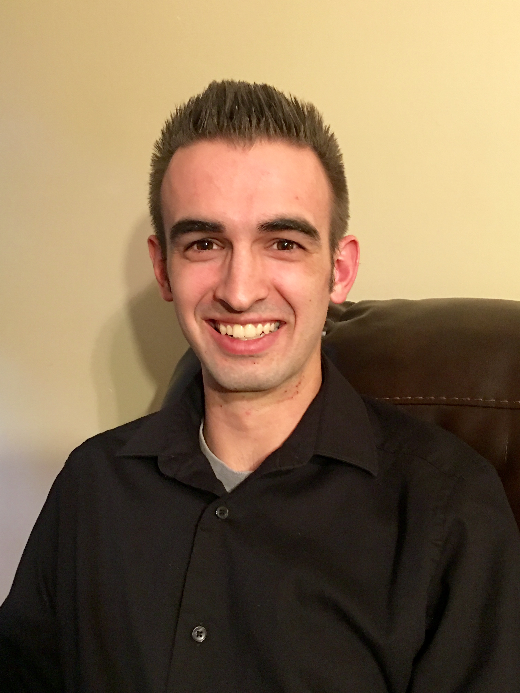

I'm an aspiring programmer looking to continuously sharpen and hone my skills in the industry. I've not always been a coder and have recently made the decision and taken the risk to change careers. My background varies but my main focus was drag racing. I worked on a professional team working at the highest level of drag racing. I have always loved tinkering with computers and building them which was what made me decide to make the switch.
I grew up in Brownsburg, IN where I was born. My free time is spent in many different ways. Coming from a racing background, I love cars and motorcycles, working on them, and racing them. I race my motorcycle and periodically my car whenever I get a chance. One of may favorite things to do is camping. My family and I have been a part of a church camping group for many years. It is one of my favorite pastimes. I have a golden retriever and a cat which are two of my best buds. I also enjoy playing video games and overall tinkering with my desktop that I built at home.